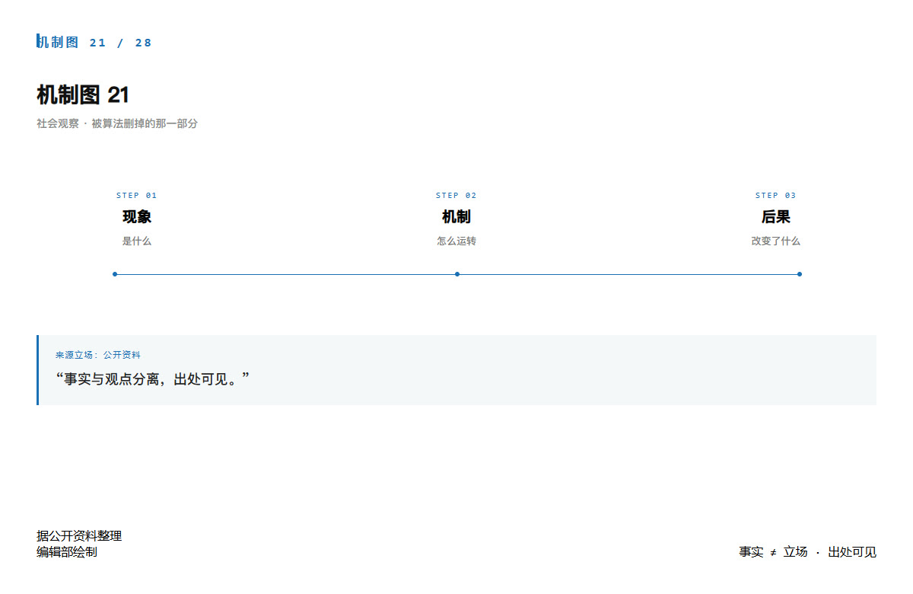

当多数人的声音，抹掉了细节
社会观察 · 被算法删掉的那一部分
一条内容能被看见，是因为它拿到了足够多的互动。那些拿不到互动的东西——细节、情境、例外、弱者的低语——不是不存在，只是在统计上不可见。
下面的引文是学界对算法排序的通行批评，属综述性转述，不是某一篇论文的逐字原文。我只谈结构，不点名任何平台的具体案例，也不碰任何一方的指控。
你有没有过这种感觉：一件事明明很复杂，网上却只剩下一句口号。那不是你太较真，是复杂在计数系统里天生吃亏，吃亏到连上场的机会都没有。
学界对这类排序有个凝练的说法，叫「多数人的暴政」。当分发完全向高频互动倾斜，算法会系统性地抹掉细节、社会情境、离群值与弱小声音。
一个需要三段前提才能讲清的判断，跑不过一句能点起情绪的断言。这不是受众的错，是两种内容在同一套定价系统里，根本不在一条赛道上比赛。
最容易被抹掉的，恰恰是最需要被认真对待的部分：时间、地点、前因后果、当事人的真实处境。它们不产生即时的手指动作，于是被一层层剥掉，最后只剩一个可供站队的壳。
📌 一个值得记住的判断
被算法抹掉的东西，不是假的，是互动低的。在计数系统里，互动低近乎于不存在；它不需要被驳倒，只要被略过就够了。
细节最先走。一段话要讲清「在什么情况下、对谁、为什么」，就已经不短了。长内容在手机上的完读率低，互动也跟着低。再准确的话，也架不住没人读完。
然后是情境。同一句话放在不同处境里，意思完全不同。可标签和标题要的是一眼就能判对错，情境反而成了障碍。它被拿掉之后，只剩一句看着解气、其实已经走样的话。
最后是离群值。那些不合主流情绪的个案、少数人的经验、和多数人感受对不上的数据，因为互动低，被当成统计上的噪声。噪声不是被驳倒的，是被略过的。
弱小声音受的伤最重。它没有传播资源，也不擅长情绪动员，唯一的筹码是「说得对」。可对系统来说，「对」不是一个可计数的量，它数不了这个。
这里要补一句对称的话。这套机制不认识性别，它对不同群体一样地抹除细节。谁在某种议题里缺少动员能力，谁就在那种议题里吃亏，换一个议题，胜负可能就调过来。
把它说成针对某一类人，是找错了对象。它针对的是「复杂、克制、需要前提」这类表达特征，不管这些特征长在谁身上。今天在这头被抹掉的，明天可能在另一头轮到别人。
当可见度由互动决定，屏幕上呈现的，就是「互动最多的那部分现实」。它和真实的分布之间隔着一道折算：更愿意表态的一方，会显得比实际更多；沉默的一方，会显得更少。
这解释了很多「一边倒」的错觉。你看到的满屏同一个声音，未必是全社会都这么想，可能只是这一边的人更愿意、也更能够表态，而另一边懒得打字。
它的危险不在于造谣，而在于筛选。它不用编造任何东西，只要把低互动的细节和情境拿掉，剩下的材料就足够支撑一个很硬、很整齐的结论。
你刷到的每一条热点，都是被削掉很多层之后剩下的壳。你觉得「事情就是这样」，可能只是因为细节那一层从来没有被推到你面前，你根本无从判断。
看穿这一点不是为了变得犬儒。恰恰相反，它是为了让你在下一次「全网都这么说」的时候，愿意多问一句：那些被抹掉的部分，到底去哪儿了，谁又因为看不见而受了伤。
出口不在情绪里，在可核查性上。平台能不能公开一条内容为什么被推给这些人的粗颗粒说明，是比空喊「算法向善」更具体、也更可谈的一步。
来源立场：学界（对算法排序公共性的批评，综述性转述）
「算法抹除了细节、社会情境、离群值与弱小声音，造成一种多数人的暴政。」
这不是某一条平台规则的原文，而是学界对这类排序后果的通行概括。它提醒我们：被抹掉的，往往正是判断所需要的那一部分。

▲ 互动倾斜如何抹除细节与情境（编辑部绘制）
✍️ 你有没有过「看完热搜，觉得事情没这么简单」的时候？
是什么让你觉得不对劲？评论区说说。觉得有用，点个赞、点个「在看」，转给也爱追问的人。
下一篇：当自述变成一种可复制的文体，事实就彻底输了。
资料来源
关于「多数人的暴政」的学术批评，属传播学界对算法排序公共性的综述性转述，非单一文献逐字引用；立场：学界，非平台方。
2018.03 微博热搜排序规则公告：搜索热度 + 传播热度 + 话题因子 + 互动因子。平台公告，规则细节以平台后续调整为准。
「细节、情境、离群值、弱小声音被抹除」为编辑部据规则结构所作的分析性推论，非实证统计结论。
社会观察，不站任何性别立场。事实据公开来源，未证实指控不转述、不评价。拆解规则是为了理解，不是行动指南。